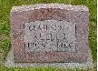

|
 | ||||||||||||
| Spouses | |||||||||||||
|
|||||||||||||
|
|||||||||||||
| Notes for Clarence Frank KELLER | |||||||||||||
| [GREATx2 UNCLE] Clarence's family lived at 1320 Taylor Street in Fort Wayne, Indiana. The family moved to 2430 Smith Road in Fort Wayne. 1911 Clarence's family moved to Bluffton, Indiana. His parents bought a house at 728 South Williams Street. June 1920 10 year old Clarence was living with his parents and three siblings at 728 South Williams and attending school. 15 June 1929 Clarence, 19 years old, was a groomsman in his brother Albert's wedding in Fort Wayne. He was employed at the Auburn Foundry in Auburn, Indiana; as were his brother and father. (Odd that they moved 25 miles south of Fort Wayne to end up working in a foundry 25 miles north of Fort Wayne.) Clarence married Lela Schlaugenhauf. [MEMORIES] from Joyce Ann (Keller) Harris, Clarence's neice: "Mom and Dad and Uncle Frank and Aunt Evelyn were all working at the Broadway [General Electric plant] when Al and Evelyn were married [15 June 1929]. Am not sure but think Clarence and Lela might have worked there also." [MEMORIES] From the written notes of Albert John Keller Jr., Clarence's brother, "Clarence ... 7/31/1908 ... 3/1/66 ... married Lela Schlaugenhauf ... 1932 ... divorced later ... no children." [MEMORIES] Fron Ralph Albert Keller, Clarence's nephew, "Clarence married a Schlaugenhauf and divorced her the following weekend." Clarence, and his father and brother, gained employment at the Red Cross Foundry in Bluffton, Indiana. The foundry was located at the corner of Washington and Oak streets and was one of the largest manufacturers of water well pumps. Clarence was a member of the Fraternal Order of the Eagles, Aerie #2632 in Bluffton. March 1966 The Thoma/Rich Funeral Home in Bluffton, Indiana handled Clarence's funeral arrangements. [G.P.S.] Clarence is buried at N 40º 44.660' W 85º 09.768' (+/- 18') | |||||||||||||
| Last Modified 2 Jul 2006 | Created 31 Dec 2006 using Reunion for Macintosh |